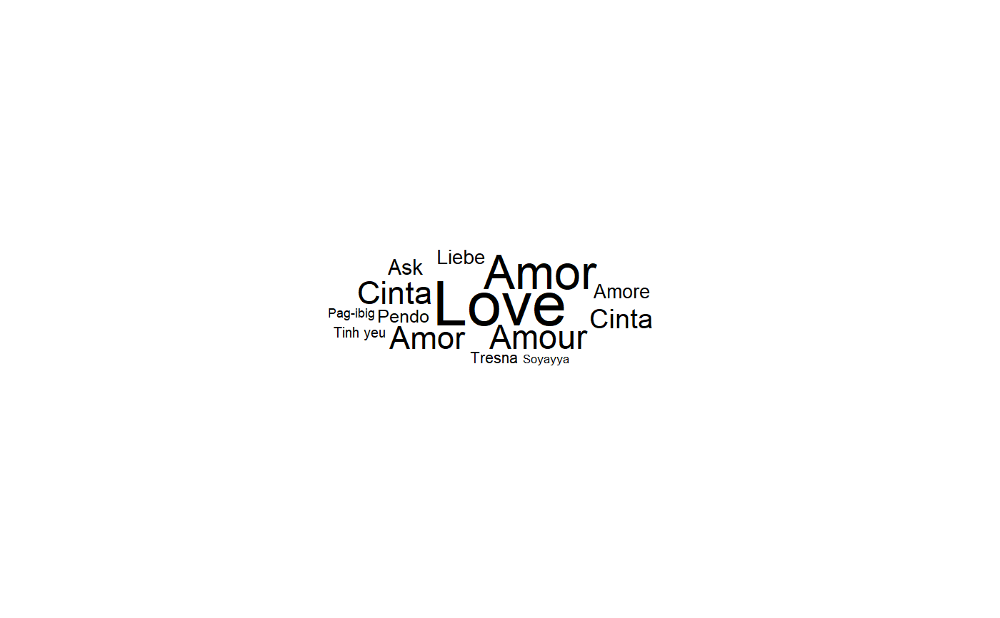
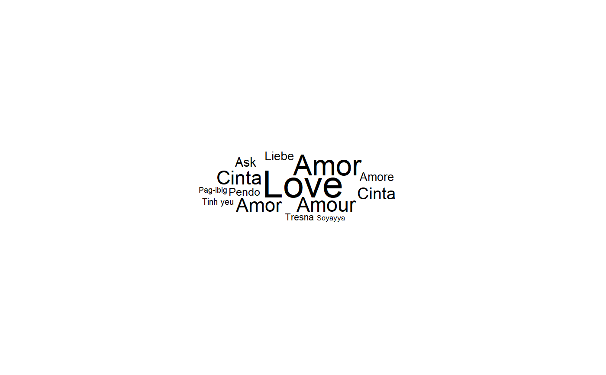

geom_text_wordcloud adds text to the plot using a variation of the
wordcloud2.js algorithm. The texts are layered around a spiral centred on
the original position. This geom is based on
geom_text_repel which in turn is based on
geom_text. See the documentation for those functions
for more details. By default, the font size is directly linked to the size
aesthetic. geom_text_wordcloud_area is an alias, with a different set
of default, that chooses a font size so that the area of the text given by the label
aesthetic is linked to the size aesthetic. You can also specify a label_content aesthetic
that overrides the label after its has been used to choose the font size.
geom_text_wordcloud(
mapping = NULL,
data = NULL,
stat = "identity",
position = "identity",
...,
parse = FALSE,
nudge_x = 0,
nudge_y = 0,
eccentricity = 0.65,
rstep = 0.01,
tstep = 0.02,
perc_step = 0.01,
max_steps = 10,
grid_size = 4,
max_grid_size = 128,
grid_margin = 1,
xlim = c(NA, NA),
ylim = c(NA, NA),
seed = NA,
rm_outside = FALSE,
shape = "circle",
mask = NA,
area_corr = FALSE,
na.rm = FALSE,
show.legend = FALSE,
inherit.aes = TRUE,
show_boxes = FALSE,
use_richtext = TRUE
)
geom_text_wordcloud_area(
mapping = NULL,
data = NULL,
stat = "identity",
position = "identity",
...,
parse = FALSE,
nudge_x = 0,
nudge_y = 0,
eccentricity = 0.65,
rstep = 0.01,
tstep = 0.02,
perc_step = 0.01,
max_steps = 10,
grid_size = 4,
max_grid_size = 128,
grid_margin = 1,
xlim = c(NA, NA),
ylim = c(NA, NA),
seed = NA,
rm_outside = FALSE,
shape = "circle",
mask = NA,
area_corr = TRUE,
na.rm = FALSE,
show.legend = FALSE,
inherit.aes = TRUE,
show_boxes = FALSE,
use_richtext = TRUE
)Arguments
- mapping
Set of aesthetic mappings created by
aesoraes_. If specified andinherit.aes = TRUE(the default), is combined with the default mapping at the top level of the plot. You only need to supplymappingif there isn't a mapping defined for the plot. Note that if not specified both x and y are set to 0.5, i.e. the middle of the default panel. Two non classic aesthetics are definedangle_groupandmask_groupwhich define groups used respectively to use different angular sector and different masks in the word cloud.- data
A data frame. If specified, overrides the default data frame defined at the top level of the plot.
- stat
The statistical transformation to use on the data for this layer, as a string.
- position
Position adjustment, either as a string, or the result of a call to a position adjustment function.
- ...
other arguments passed on to
layer. There are three types of arguments you can use here:Aesthetics: to set an aesthetic to a fixed value, like
colour = "red"orsize = 3.Other arguments to the layer, for example you override the default
statassociated with the layer.Other arguments passed on to the stat.
- parse
If
TRUE, the labels will be parsed into expressions and displayed as described in ?plotmath- nudge_x, nudge_y
Horizontal and vertical adjustments to nudge the starting position of each text label.
- eccentricity
eccentricity of the spiral. Default to .65
- rstep
relative wordcloud spiral radius increment after one full rotation. Default to .01.
- tstep
wordcloud spiral angle increment at each step. Default to .02.
- perc_step
parameter used to define the minimal distance between two successive candidate positions on the ellipse. Default to .01
- max_steps
maximum number of steps avoided thanks to this minimal criterion. Default to 10. Set to 1 to recover the previous behavior
- grid_size
grid size used when creating the text bounding boxes. Default to 4
- max_grid_size
maximum size of the bounding boxes. Default to 128
- grid_margin
safety margin around the texts. Default to 1.
- xlim, ylim
Limits for the x and y axes. Text labels will be constrained to these limits. By default, text labels are constrained to the entire plot area.
- seed
Random seed passed to
set.seed. Defaults toNA, which means thatset.seedwill not be called.- rm_outside
Remove the texts that could not be fitted. Default to
FALSE- shape
select the shape of the clouds among
circle,cardioid,diamond,square,triangle-forward,triangle-upright,pentagon,star. Default tocircle- mask
a mask (or a list of masks) used to define a zone in which the text should be placed. Each mask should be coercible to a raster in which non full transparency defined the text zone. When a list of masks is given, the mask_group aesthetic defines which mask is going to be used. Default to
NA, i.e. no mask.- area_corr
Set the font size so that the area is proportional to size aesthetic when the scale_size_area is used. As this is not the classical choice, the default is
FALSEso that, by default, the length of the text is not taken into account.geom_text_wordcloud_areaset this toTRUEby default.- na.rm
Remove missing values if TRUE
- show.legend
is set by default to
FALSE- inherit.aes
Inherits aesthetics if TRUE
- show_boxes
display the bounding boxes used in the placement algorithm is set to
TRUE. Default toFALSE.- use_richtext
use the enhanced gridtext text grob instead of the grid one. Allow to use markdown/html syntax in label. Default to
TRUE.
Value
a ggplot
Examples
set.seed(42)
data("love_words_latin_small")
ggplot(love_words_latin_small, aes(label = word, size = speakers)) +
geom_text_wordcloud() +
scale_size_area(max_size = 20) +
theme_minimal()
 ggplot(love_words_latin_small, aes(label = word, size = speakers)) +
geom_text_wordcloud_area() +
scale_size_area(max_size = 20) +
theme_minimal()

ggplot(love_words_latin_small, aes(label = word, size = speakers)) +
geom_text_wordcloud_area() +
scale_size_area(max_size = 20) +
theme_minimal()
